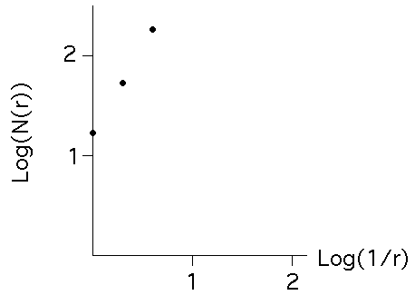

| Incorrect computations of dimension abound, so some care is needed
when referring to examples, especially on websites. Here is an incorrect
calculation, similar to a web example frequently found by students over the
last few years. |
| We want to show the side-elevation view of the building (in blue)
is a fractal. |
| To do this, we |
| cover the image with boxes of several sizes, |
| count the boxes, and |
| do a log-log plot of the number of boxes. |
|
| If the points are close to a straight line, the slope of the line is the
box-counting dimension. If the dimension is not a whole number, the shape must
be a fractal, because only fractals have non-integer dimensions. |
|
| Here is the data for this box-count. Plot the points. They appear to fall
pretty close to a straight line. |
| rn |
N(rn) |
1/rn |
Log(1/rn) |
Log(N(rn)) |
|---|
| 1 |
17 |
1 |
0 |
1.230 |
| 1/2 |
53 |
2 |
.301 |
1.724 |
| 1/4 |
183 |
4 |
.602 |
2.262 |
|
 |
|
| We could compute the slope by finding the best-fitting line, but some examples
(incorrectly) compute slopes for each pair of points.
|
| first and second | (1.724 - 1.230)/(.301 - 0) | = 1.641 |
| second and third | (2.262 - 1.724)/(.602 - .301) | = 1.787 |
| first and third | (2.262 - 1.230)/(.602 - 0) | = 1.714 |
|
| These numbers are not close to 2, so the shape must be a fractal. |
| WRONG WRONG WRONG As we saw in the example of the
gasket and line segment example, if a
shape consists of several pieces, the dimension of the shape is the largest of the
dimensions of the pieces. |
| This shape contains filled-in rectangles, having dimension 2, so the whole shape has
dimension 2. |
| What went wrong with the calculation? Not nearly small enough boxes were used.
Box-counting ratios can be very slow to converge to the dimension. |
| When you look at a website, the first question you should ask is "Based on what I
know, does this make sense?" Not nearly everything posted on the web is correct. |